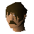
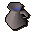
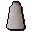
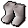
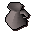
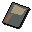

Shantay Pass Shop
Inventory config
shantayshopRun by

Shantay. Open in knowledge graph →Located in: Shantay Pass
Stock
| Item | Stock | Value | Sells for |
|---|---|---|---|
| 100 | 30 gp | 30 gp | |
| 100 | 15 gp | 15 gp | |
 Jug of water | 10 | 1 gp | 1 gp |
| 10 | 4 gp | 4 gp | |
| 10 | 6 gp | 6 gp | |
| 10 | 6 gp | 6 gp | |
| 10 | 40 gp | 40 gp | |
 Desert robe | 10 | 40 gp | 40 gp |
 Desert boots | 10 | 20 gp | 20 gp |
| 10 | 8 gp | 8 gp | |
| 500 | 2 gp | 2 gp | |
| 10 | |||
| 0 | 2 gp | 2 gp | |
| 0 | 4 gp | 4 gp | |
 Jug | 0 | 1 gp | 1 gp |
 Shantay pass | 500 | 5 gp | 5 gp |
Shop sells at 100.0% of item value and buys at 70.0%.